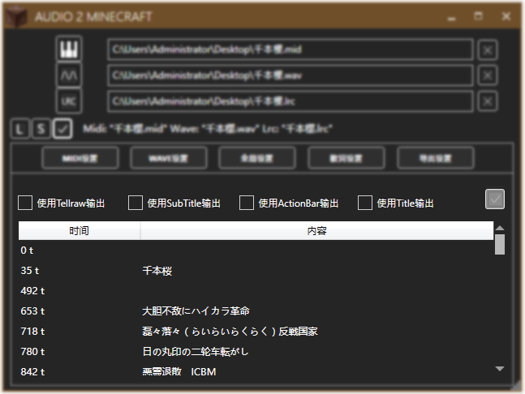
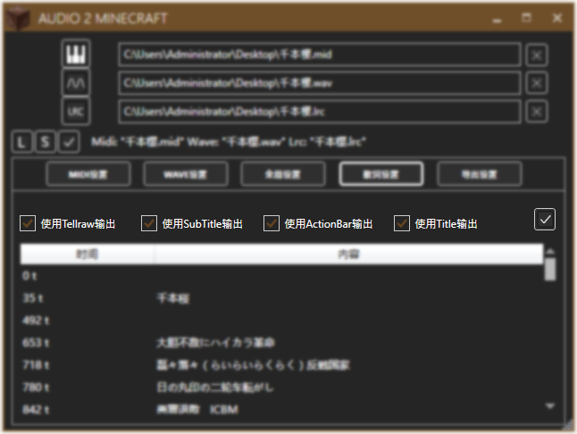

导入歌词后，下方列表将显示歌词的预览，包括歌词的起始刻数和歌词内容。
目前支持的歌词文件有.lrc和.amlrc（A2M专用的歌词文件）

目前支持Tellraw（聊天栏）、SubTitle（子标题）、ActionBar（物品栏上方）、Title（标题）。
修改后别忘了点击右边的对勾保存设置。
这是一个示例文件：少女终末旅行.amlrc
不同于lrc歌词文件，A2M歌词文件(amlrc)更加高级，支持逐段甚至逐字地设置样式。A2M歌词基于Title，通过特定的语法，你可以让歌词出现在不同的位置，显示不同的颜色。不过比起lrc，amlrc的制作相对麻烦。
标准格式："内容"-"起始刻数";
例如：今日-150; §7は-175;
前者表示在第150刻出现"今日"，后者表示在第175刻出现灰色的"は"（详见样式代码）
标准格式：
单元素×m //title (单元素×n //subtitle)
例如：
孤-693;§8独-698; §8さ-679;§7よ-682;§7な-684;§7ら-686;§7さ-689;
表示下方五个元素作为subtitle分别在第679、682、684、686、689刻出现，上方两个元素作为title分别在第693、698刻出现。 这七个元素作为一个组合元素，虽然不是同时出现的，但会在下一个组合元素出现时同时消失。
组合元素之间空一行，表示分隔。
例如：
難-750; §7難-757; §8難-764;§9解-773;§7な-782;